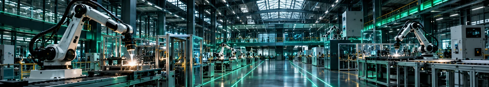
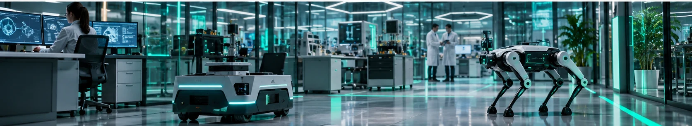
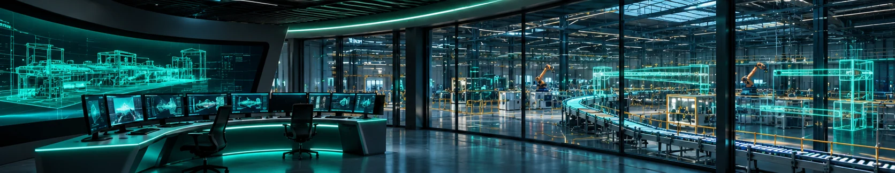
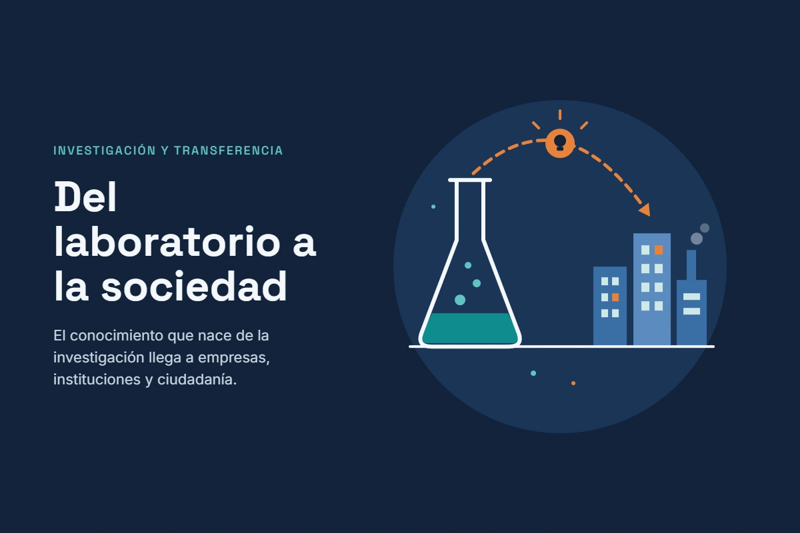
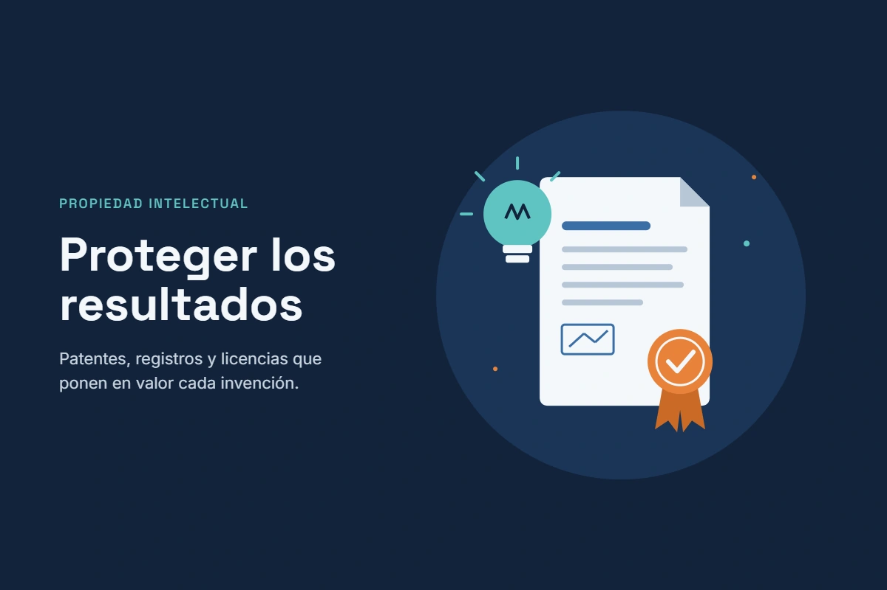
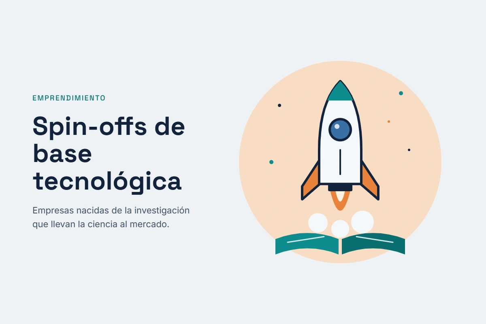

01 / ADVANCED INDUSTRYFabricación inteligente
Emprendimiento científico · Servicios para grupos de investigación
Del laboratorio a la industria del futuro.
En DOC acompañamos a otros grupos de investigación a transformar sus resultados en oportunidades de mercado, modelos de negocio viables y proyectos empresariales preparados para su puesta en marcha.
01Evaluación estratégica
02Diseño de modelo de negocio
03Hoja de ruta de lanzamiento
DOC · Grupo de Investigación SEJ-232 · Universidad de Jaén

INDUSTRIAL INNOVATION / 4.0
CONOCIMIENTO → MERCADO → EMPRESA
De la idea y la tecnología a una propuesta empresarial contrastada.Para investigadores y equipos científicos
DEEP TECH / INDUSTRIA 4.0
El conocimiento se convierte en industria.
Exploramos la oportunidad empresarial detrás de la investigación: desde tecnologías emergentes hasta aplicaciones industriales, modelos de negocio y estrategias de entrada al mercado.

02 / RESEARCH TO PRODUCTRobótica y prototipado

03 / DIGITAL OPERATIONSIndustria conectada
Imágenes conceptuales generadas para ilustrar ámbitos de innovación industrial; no representan proyectos o instalaciones reales de DOC.
CONOCIMIENTO · PROTECCIÓN · EMPRESA
Tres decisiones clave para convertir ciencia en impacto.
Del laboratorio a la sociedad, pasando por la protección del conocimiento y la exploración de nuevas empresas de base científica. DOC aporta el análisis empresarial complementario que ayuda a valorar estas vías.



Qué podemos aportar
Servicios para transformar resultados en empresas
Un servicio especializado en la dimensión empresarial de la transferencia de conocimiento. El alcance de cada colaboración se define con el grupo promotor y los servicios institucionales pertinentes.
Valorización de resultados
Identificamos aplicaciones, problemas que resuelve la investigación, usuarios y posibles ámbitos de explotación.
Análisis de mercado
Estudiamos clientes, necesidades, alternativas existentes, competencia, barreras de entrada y dimensión de la oportunidad.
Modelo de negocio
Definimos propuesta de valor, segmentos, ingresos, costes, socios, recursos y estrategia de validación.
Marketing y comercialización
Diseñamos el posicionamiento, el mensaje, los canales comerciales y los primeros contactos con usuarios potenciales.
Plan de empresa y financiación
Preparamos hipótesis financieras, necesidades de recursos, hitos y materiales de presentación para posibles colaboradores o financiadores.
Preparación de la constitución
Orientamos al equipo promotor sobre los pasos de creación y coordinación con las unidades universitarias y profesionales jurídicos competentes.
Cómo trabajamos
Un itinerario en seis fases
El proceso es flexible: el punto de partida depende del grado de madurez tecnológica, la validación comercial y las necesidades de cada equipo.
01
Diagnóstico inicial
Entrevista con el equipo, revisión del resultado y definición de objetivos.
02
Oportunidad de mercado
Identificación de aplicaciones, usuarios, competidores y propuesta preliminar de valor.
03
Validación con clientes
Contraste de hipótesis mediante entrevistas, pruebas piloto o evidencias disponibles.
04
Diseño empresarial
Modelo de negocio, estrategia comercial, organización y análisis financiero.
05
Hoja de ruta
Equipo promotor, hitos, opciones de financiación y necesidades de protección o licencias a revisar.
06
Preparación del lanzamiento
Documentación empresarial y coordinación con los órganos responsables de los trámites formales.
Resultados de la colaboración
Entregables útiles para tomar decisiones
Los documentos se adaptarán al encargo y al nivel de madurez de la iniciativa; no todos serán necesarios en todos los proyectos.
01
Informe de oportunidad
Aplicaciones, segmentos, competencia y principales riesgos.
02
Business Model Canvas
Propuesta de valor e hipótesis comerciales y operativas.
03
Plan de negocio y marketing
Modelo económico, estrategia de entrada al mercado y previsiones.
04
Pitch y hoja de ruta de constitución
Presentación del proyecto y próximos pasos para el equipo promotor.
Preguntas frecuentes
Antes de dar el paso
¿Necesitamos tener una empresa constituida?
No. La colaboración puede comenzar con un resultado de investigación y una hipótesis de aplicación. Precisamente ayudamos a decidir si tiene sentido avanzar hacia una empresa.
¿Trabajáis con grupos de otras disciplinas?
Sí. La propuesta está dirigida a otros grupos de investigación, especialmente cuando necesitan apoyo complementario en estrategia, marketing y gestión empresarial.
¿DOC constituye legalmente la empresa?
DOC ofrece acompañamiento en el diseño y preparación empresarial. La constitución jurídica y, en su caso, el reconocimiento como spin-off requieren la intervención de profesionales y órganos universitarios competentes.
¿Existe un presupuesto o duración fija?
No se publica una tarifa ni un plazo estándar. El alcance, las condiciones y la viabilidad de cada colaboración se acordarán para el caso concreto.
Hablemos de tu proyecto
pnunez@ujaen.es ↗¿Y si el siguiente paso de tu investigación fuera una empresa?
Contacta con el grupo DOC (SEJ-232) de la Universidad de Jaén para valorar una posible colaboración de asesoramiento empresarial.
Propuesta de servicios de DOC sujeta a validación institucional y al acuerdo de las partes. El asesoramiento de negocio no sustituye la evaluación de propiedad intelectual, la asistencia jurídica ni las autorizaciones exigibles para crear o reconocer empresas basadas en conocimiento universitario.